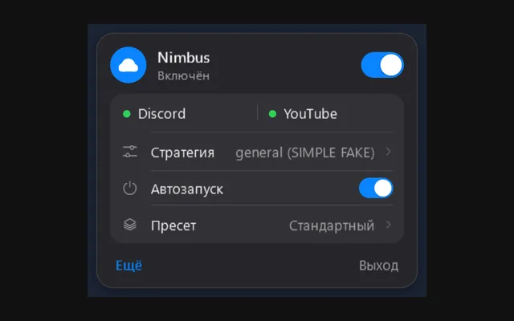
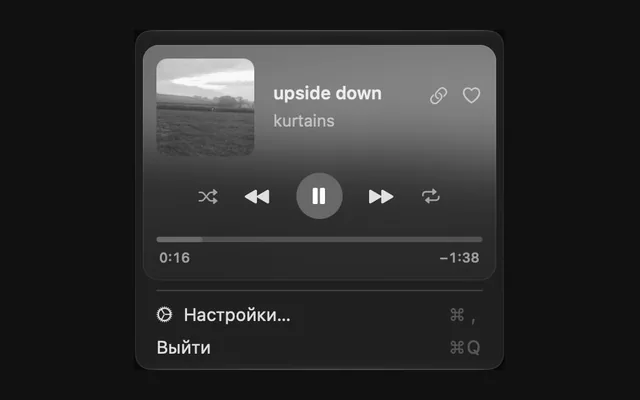
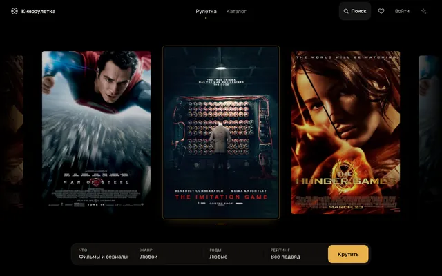
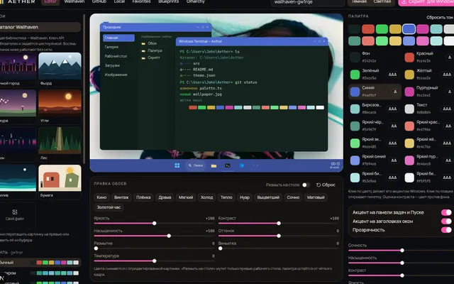

Делаю небольшие утилиты для macOS и Windows, которые решают одну задачу хорошо.
проекты
-
NimbusmacOS · Windows
zapret из строки меню: Discord и YouTube без терминалафорк Flowseal/zapret-mac-discord-youtube

-
Ya.Music-RPCmacOS
трек из Яндекс Музыки в статусе Discord и мини-плеер в меню

-
Кинорулеткаweb
случайный фильм, сериал или аниме по жанру и годам

-
aetherWindows
обои с Wallhaven и тема Windows из их палитры
